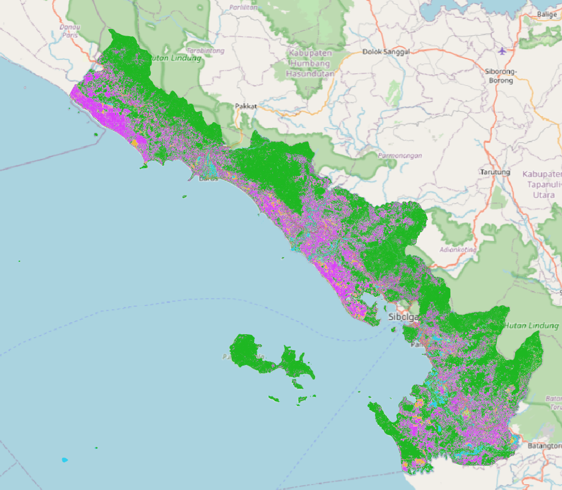
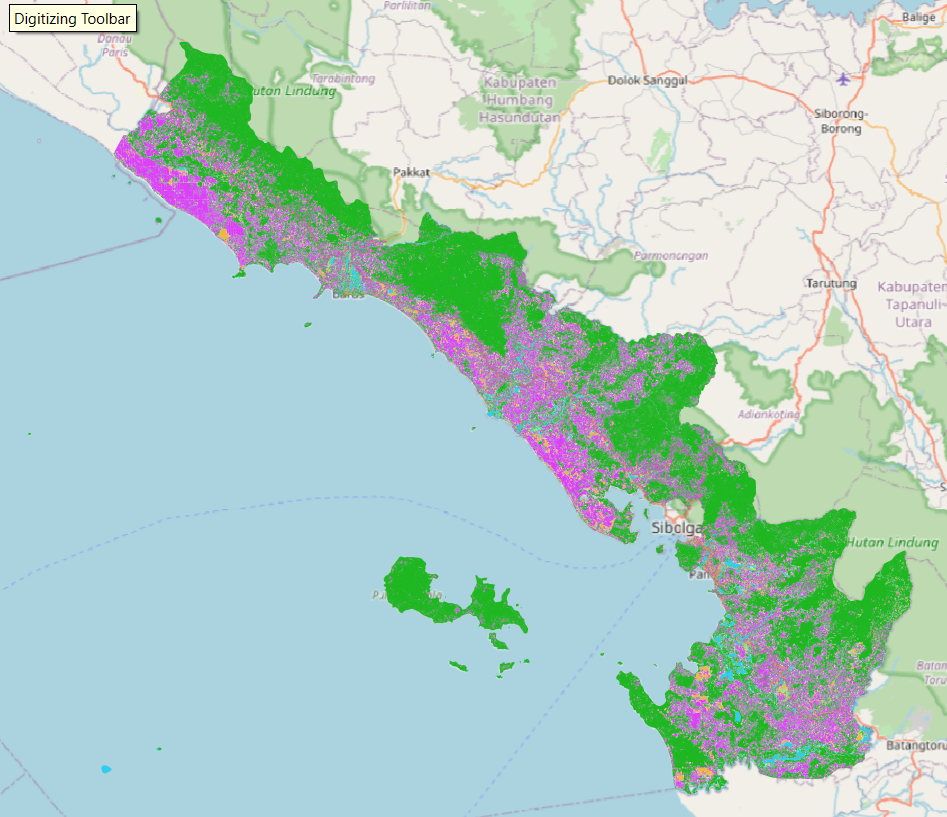
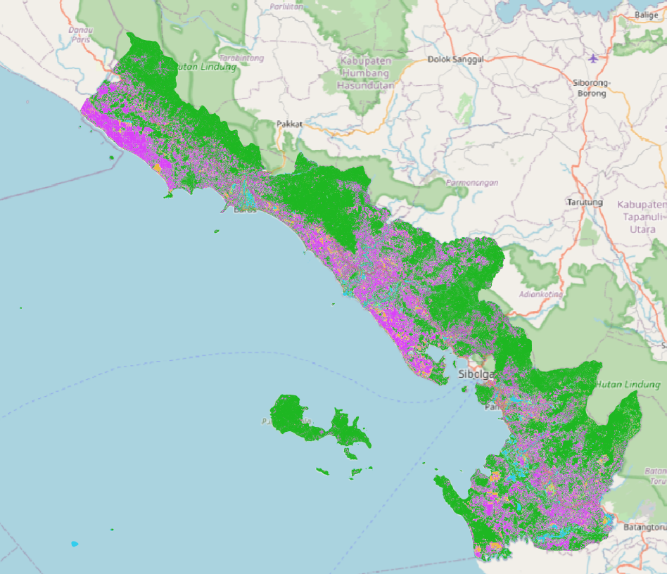

Tempat halaman detail informasi.


| Kelas | 2020–2022 (ha) | 2023–2024 (ha) | Δ (ha) | Tren |
|---|
Pada periode 2020–2022 ke 2023–2024, tutupan lahan Kabupaten Tapanuli Tengah menunjukkan perubahan yang relatif moderat dengan kecenderungan utama berupa peningkatan kelas Vegetasi dan penurunan Sawit. Vegetasi meningkat dari 73,746% menjadi 76,118% (+2,372%) dan menjadi perubahan bersih terbesar, terutama disuplai oleh konversi Sawit, Pertanian, dan Infrastruktur ke Vegetasi, yang mengindikasikan proses regenerasi atau penutupan kembali lahan.
Sebaliknya, Sawit menurun dari 17,275% menjadi 15,558% (−1,716%) akibat konversi ke Vegetasi yang lebih dominan dibandingkan aliran masuknya. Kelas lain seperti Badan Air, Pertanian, dan Lahan Terbuka mengalami perubahan kecil, sementara Infrastruktur menurun cukup signifikan. Secara umum, periode ini ditandai oleh penguatan tutupan vegetasi dan stabilitas relatif kelas lainnya.

| Kelas | 2020–2022 (ha) | 2025 (ha) | Δ (ha) | Tren |
|---|
Selama periode 2020–2022 ke 2025, tutupan lahan mengalami perubahan yang sangat signifikan dengan ekspansi Sawit sebagai dinamika utama. Sawit meningkat tajam dari 17,275% menjadi 41,963% (+24,687%) dan menjadi kelas dengan pertumbuhan terbesar, terutama berasal dari konversi Infrastruktur, Vegetasi, dan Lahan Terbuka.
Vegetasi tetap mendominasi lanskap dengan proporsi 53,726%, meskipun mengalami tekanan konversi di beberapa area. Di sisi lain, Lahan Terbuka, Infrastruktur, dan Pertanian mengalami penurunan luasan, sementara Badan Air meningkat sedikit. Secara keseluruhan, periode ini menunjukkan intensifikasi penggunaan lahan untuk perkebunan sawit yang sangat kuat, sehingga diperlukan kehati-hatian dalam interpretasi dan dukungan uji akurasi klasifikasi.
| Kelas | 2023–2024 (ha) | 2025 (ha) | Δ (ha) | Tren |
|---|
Pada periode 2023–2024 ke 2025, struktur tutupan lahan mengalami pergeseran yang sangat kuat menuju dominasi Sawit. Sawit meningkat drastis dari 15,558% menjadi 41,963% (+26,404%), sementara Vegetasi menurun tajam dari 76,118% menjadi 53,726% (−22,391%), yang mengindikasikan konversi vegetasi dalam skala besar.
Peningkatan Sawit terutama disuplai oleh konversi dari Badan Air, Vegetasi, dan Lahan Terbuka, yang menunjukkan bahwa area perairan tidak permanen dan lahan transisi turut dimanfaatkan untuk perkebunan. Kelas lain seperti Infrastruktur, Pertanian, dan Lahan Terbuka cenderung menurun, sehingga periode ini menegaskan ekspansi sawit sebagai penggerak utama perubahan tutupan lahan.
| Kelas | 2020–2022 (ha) | Saat_Bencana (ha) | Δ (ha) | Tren |
|---|
Pada periode 2020–2022 hingga saat bencana, tutupan lahan Kabupaten Tapanuli Tengah menunjukkan penurunan signifikan pada Vegetasi dan peningkatan pada Sawit serta Badan Air. Vegetasi berkurang dari 73,746% menjadi 66,323% (−7,423%), sementara Sawit meningkat dari 17,275% menjadi 24,210% (+6,935%), terutama akibat konversi dari Pertanian, Badan Air, dan Infrastruktur.
Peningkatan Badan Air yang cukup besar mencerminkan meluasnya genangan atau perubahan kondisi perairan akibat bencana. Penurunan pada Infrastruktur dan Lahan Terbuka menunjukkan terjadinya pergeseran fungsi lahan, sehingga periode ini merefleksikan tekanan bencana terhadap tutupan alami dan perubahan penggunaan lahan yang cukup intensif.
| Kelas | 2023–2024 (ha) | Saat_Bencana (ha) | Δ (ha) | Tren |
|---|
Pada periode 2023–2024 hingga saat bencana, tutupan lahan menunjukkan dinamika yang cukup jelas dengan penurunan Vegetasi dan peningkatan Sawit serta Badan Air. Vegetasi menurun dari 76,118% menjadi 66,323% (−9,795%), sementara Sawit meningkat dari 15,558% menjadi 24,210% (+8,651%), terutama akibat konversi dari Pertanian, Badan Air, dan Infrastruktur.
Peningkatan Badan Air yang signifikan mengindikasikan adanya genangan dan perubahan hidrologi akibat bencana, sedangkan kelas lain seperti Lahan Terbuka dan Pertanian cenderung menurun. Secara umum, periode ini menunjukkan bahwa kejadian bencana berperan penting dalam mendorong perubahan struktur tutupan lahan, baik secara langsung maupun tidak langsung.